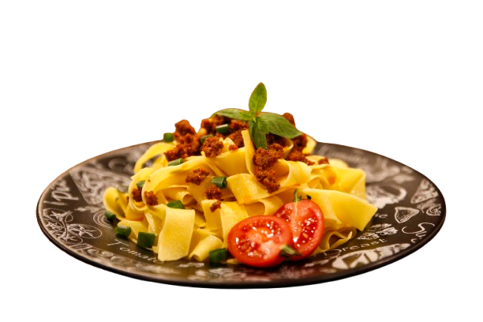
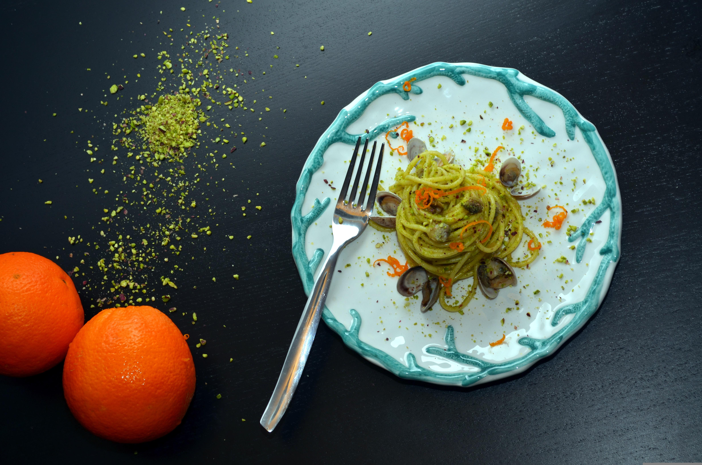
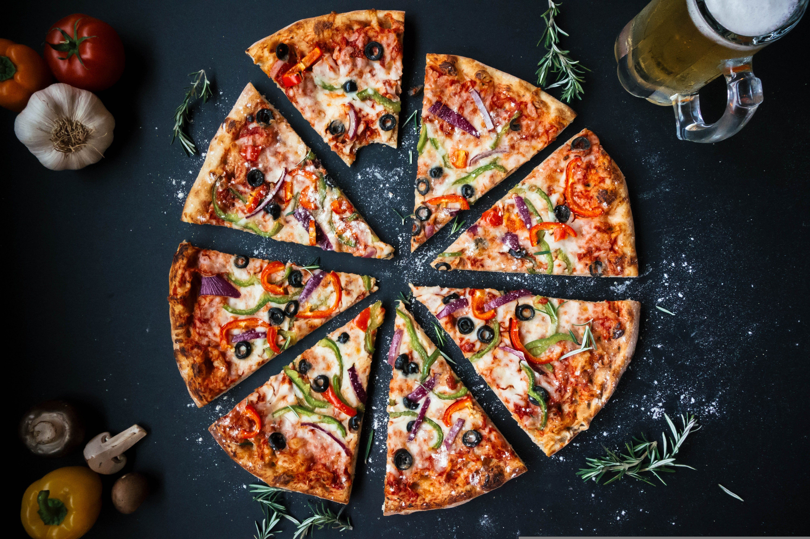

Auténtica cocina italiana
Sabores tradicionales que combinan sencillez, calidad y pasión por la buena comida

Ingredientes de calidad
La base de la cocina italiana reside en la calidad de sus ingredientes. Tomates maduros, aceite de oliva, quesos y hierbas aromáticas son fundamentales para crear platos llenos de sabor.
Trabajamos con productos seleccionados que garantizan autenticidad y frescura en cada elaboración. Este enfoque nos permite ofrecer recetas sencillas pero intensas, donde cada ingrediente tiene su protagonismo.
Cada plato refleja el equilibrio perfecto entre tradición y calidad.
Tradición y sabor
La cocina italiana destaca por sus recetas tradicionales que han pasado de generación en generación. En Gastro seguimos estas raíces, elaborando platos que respetan su origen y su esencia.
Desde pastas frescas hasta pizzas artesanales, cada preparación busca transmitir el auténtico sabor de Italia. La combinación de técnicas clásicas y una presentación cuidada crea una experiencia única.
Nuestro objetivo es que cada plato sea un viaje a la cocina italiana más auténtica.


Compartir y disfrutar
La comida italiana es mucho más que alimentarse, es una experiencia social basada en compartir. Cada plato invita a reunirse alrededor de la mesa y disfrutar del momento.
En Gastro queremos transmitir ese espíritu, ofreciendo una cocina cercana, cálida y pensada para disfrutar en compañía.
Porque la esencia de la gastronomía italiana está en su capacidad de unir a las personas a través de la comida.